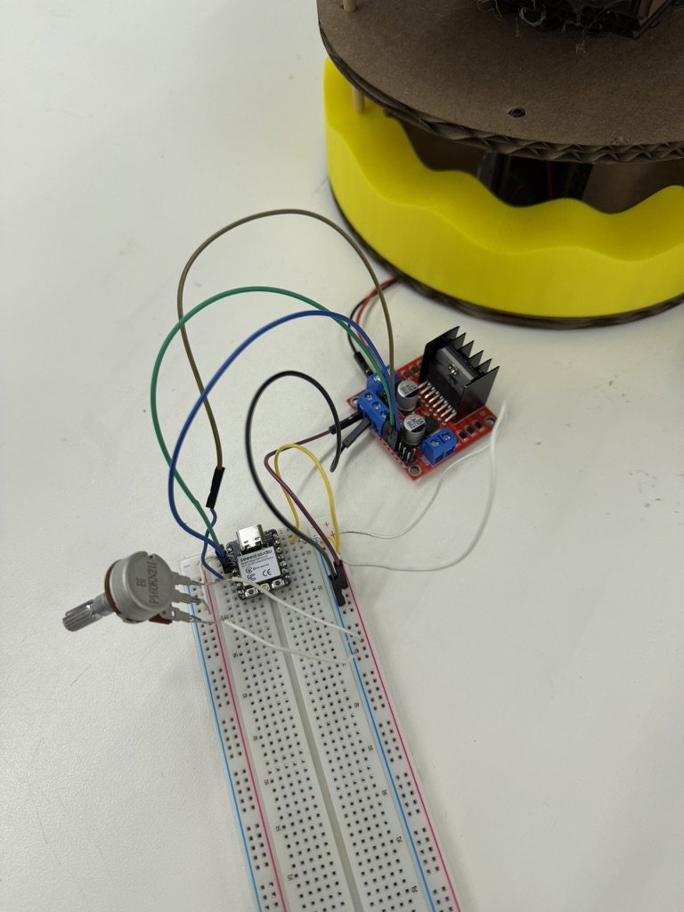
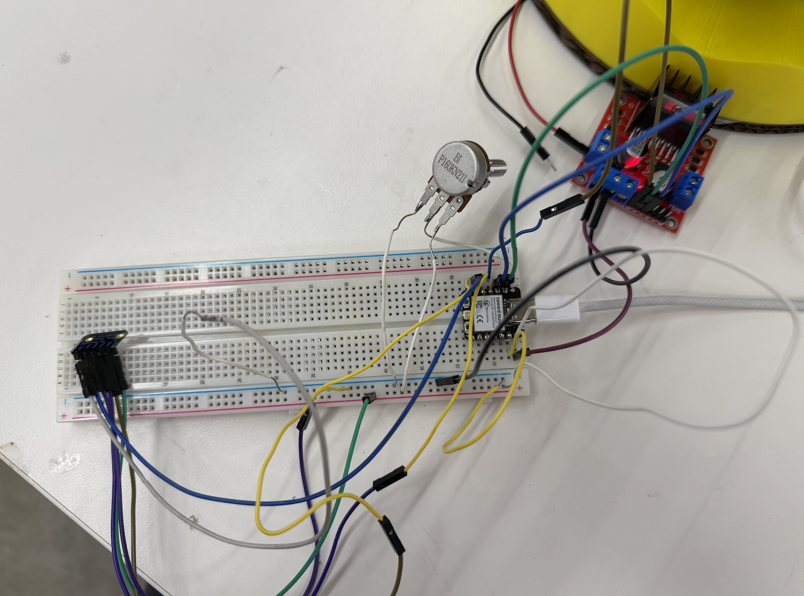
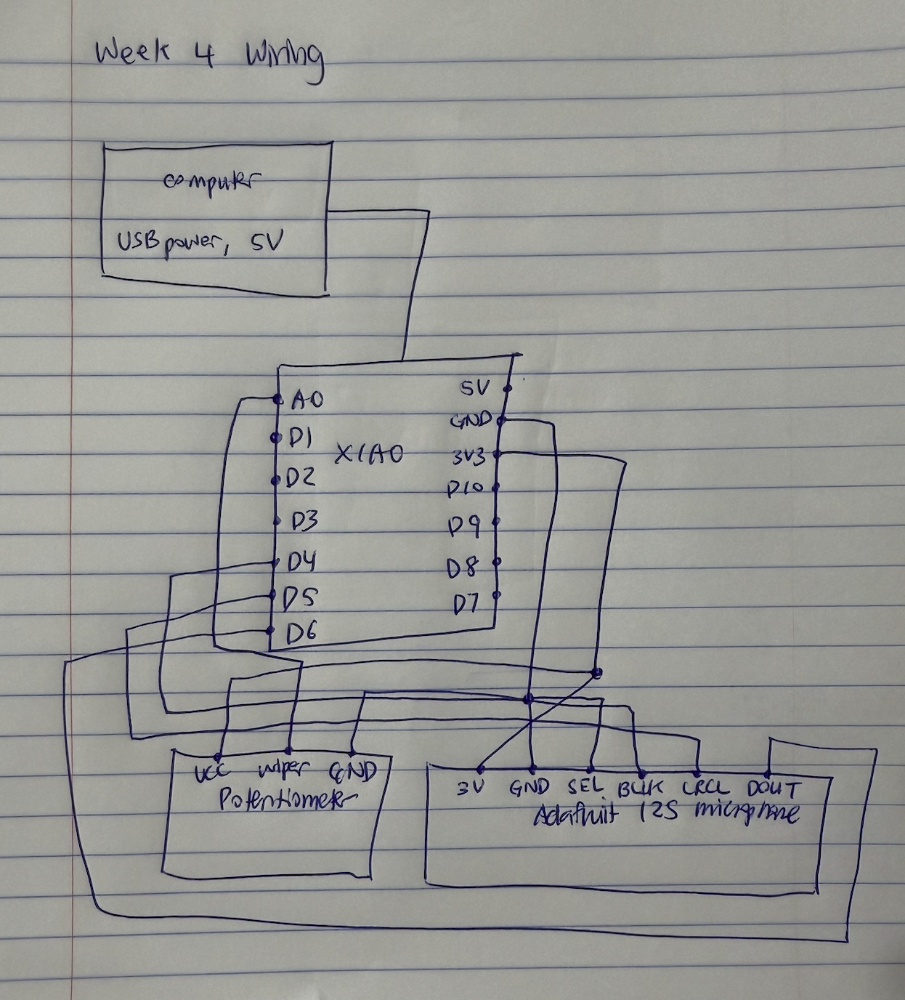

This week's assignment was to program a microcontroller to do something. I decided to build on my kinetic sculpture from Week 3 and bring it under microcontroller control. I wanted to extend my project in three ways:
I wanted to take the opportunity through this assignment to specifically learn two things I had never used before, the Adafruit I2S MEMS microphone, and the OpenAI transcription API.
To get the carousel to run continuously from the XIAO microcontroller instead of the DC power supply, in my first sketch, I just turned the motor on and left it on:
digitalWrite(IN1, HIGH); // direction
digitalWrite(IN2, LOW);
analogWrite(ENA, speed); // 0-255, speedBecause the motor needs a higher voltage than the XIAO's pins can supply, I had to wire the XIAO through a motor driver. I followed this Random Nerd Tutorials guide to figure out the wiring:

I got it working, but at an ENA value of 255 the carousel spun way too fast. The rotation was so strong that the cats couldn't ride up and down the wavy base. There was too much rotational force for the vertical motion to happen. I needed to slow the motor down so the up-and-down motion could still work. After a few runs of trial and error, I found the carousel ran best at an ENA value of around 150.
Next I tried pulsing the motor, which involved turning it on and off in short bursts, to see if that produced smoother motion. I ran a series of tests, varying:
I started with a single calibration cat and slowly worked up to six. I couldn't start with six right away, because the combined friction of six objects was too much for the motor to overcome from a standstill. In the end, the pulsing worked best with the motor on for 80 ms and resting for 100 ms:
#define IN1 D0
#define IN2 D1
#define ENA D2
const int PULSE_MS = 80;
const int REST_MS = 100;
void setup() {
pinMode(IN1, OUTPUT);
pinMode(IN2, OUTPUT);
pinMode(ENA, OUTPUT);
digitalWrite(IN1, HIGH);
digitalWrite(IN2, LOW);
}
void loop() {
analogWrite(ENA, 255); // full-power pulse
delay(PULSE_MS);
analogWrite(ENA, 0); // coast
delay(REST_MS);
}In all of the pulsing tests I drove the motor at full power (ENA = 255) during the "on" phase. But across the trials I noticed that pulsing actually made the carousel perform worse than running it continuously.
My hypothesis is that since static friction is greater than or equal to kinetic friction, every time a pulse rests, the carousel comes to a stop, so on the next pulse the motor has to overcome static friction all over again. For a kinetic system with as much friction as the wooden rods have, continuous is probably a better approach than pulsing.
I also added a potentiometer to the breadboard so I could control the carousel's speed by turning a knob, rather than hard-coding a speed value into the Arduino sketch every time. This makes it so that I can change the speed while the sculpture is running.
Wiring the potentiometer was relatively easy, since it only has three pins and two of them are just power. The important detail in the code was reading the potentiometer on an analog pin rather than a digital one. As we learned in class, an analog pin can read a continuous range of voltage values, while a digital pin only reads a discrete HIGH or LOW.
#define IN1 D1
#define IN2 D2
#define ENA D3
#define POT A0
void setup() {
pinMode(IN1, OUTPUT);
pinMode(IN2, OUTPUT);
pinMode(ENA, OUTPUT);
digitalWrite(IN1, HIGH);
digitalWrite(IN2, LOW);
}
void loop() {
int raw = analogRead(POT);
int speed = map(raw, 0, 4095, 0, 255);
analogWrite(ENA, speed);
}Finally, I wanted to take the chance in this assignment to learn the Adafruit I2S MEMS microphone. When it was introduced in class, I thought it was amazing that a component that small could work as a microphone, so I wanted to learn to use it properly.
My goal was to build a system such that when a user says "start," the carousel turns on, and when a user says "stop," it turns off.
I started by soldering the header pins onto the Adafruit breakout board, then wiring the board to the XIAO. I followed the Adafruit I2S MEMS microphone tutorial:


Before involving any API, I wanted to confirm the microphone was giving me sensible data. So for my first test, I checked to confirm that as I spoke louder, the raw signal value printed to the serial monitor also increased.
Problem 1. At first, no matter what I said, the microphone always read 32768. Whether I was speaking loudly or getting close to the mic, it made no difference. The issue turned out to be the power pin. I had wired the mic to 5 V, but it needed only 3.3 V. By moving the power pin to 3.3 V, I finally got values that changed with sound.
Problem 2. Even after fixing the voltage, the reading average was stuck flat near 14600. Reading the Adafruit breakout board datasheet, I learned this was a phenomenon called a DC offset, where the microphone outputs a constant bias, and you have to subtract that bias to measure the actual audio, which is the variation around it. Here's the code I wrote to do that:
long sum = 0;
for (int i = 0; i < samples; i++) sum += (buf[i] >> 8);
int32_t dc = sum / samples; // the bias
// then measure variation AROUND dc (that's the real audio)
int32_t a = abs((buf[i] >> 8) - dc);Once I confirmed that speaking near the microphone reliably increased the raw signal values and that the values made sense, I moved on to transcription.
I got an API key from OpenAI's developer portal and added it to my Arduino sketch. I had to learn how to send the microphone's recorded audio to OpenAI's transcription model, which converts speech to text. I sent the recordings to the API through an HTTPS POST request. Here's the code:
client.printf("POST /v1/audio/transcriptions HTTP/1.1\r\n");
client.printf("Host: api.openai.com\r\n");
client.printf("Authorization: Bearer %s\r\n", OPENAI_KEY);
client.printf("Content-Type: multipart/form-data; boundary=%s\r\n", b);
client.printf("Content-Length: %d\r\n", len);
client.printf("Connection: close\r\n\r\n");Although the model could pick out some of my words when I spoke clearly and loudly, it needed the right setup to give consistently usable results. Because I hadn't told the model what language I was speaking, it would sometimes transcribe my speech as completely different languages:
rawPeak=1392632 scale=0.02 finalPeak=24999
>>> uploading
>>> heard: "കൂടുതലായി."
motorOn=1 pot speed=194
>>> recording
rawPeak=1259563 scale=0.02 finalPeak=25000
>>> uploading
>>> heard: "पार्टी."
motorOn=1 pot speed=194
>>> recording
rawPeak=1474022 scale=0.02 finalPeak=24999
>>> uploading
>>> heard: "闪闪。"
motorOn=1 pot speed=194
>>> recording
rawPeak=1739681 scale=0.01 finalPeak=25000
>>> uploading
>>> heard: "evident."I realized I needed to tell the model from the start that I would be speaking English. After I specified the language up front, I was able to filter out most of the garbage results. After some research, I also switched from the Whisper model to OpenAI's newer gpt-4o-transcribe model, which gave noticeably better transcription accuracy and finally got it to work reliably!